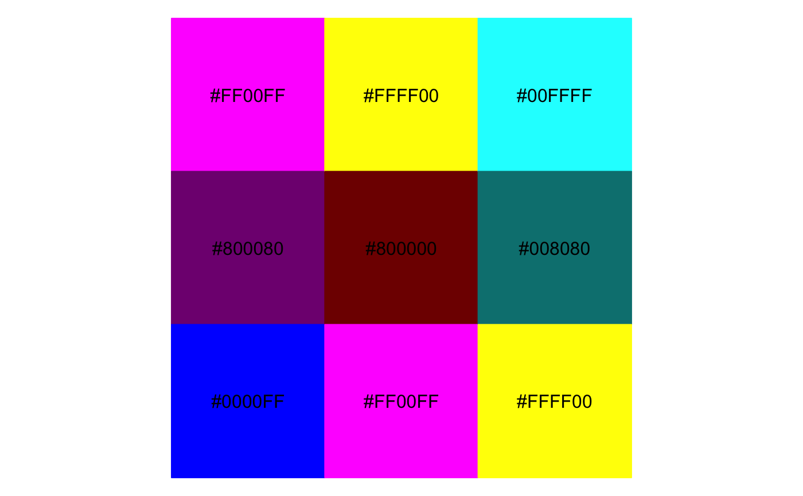

The color palettes used in Microsoft Excel 1997 (up until Excel 2007). Use this for that classic ugly look and feel. For ironic purposes only. 3D bars and pies not included. Please never use this color palette.
excel_classic_pal(line = TRUE)
Arguments
| line | If |
|---|
See also
Other colour excel: excel_pal,
scale_color_excel_classic,
scale_fill_excel_classic
Examples
